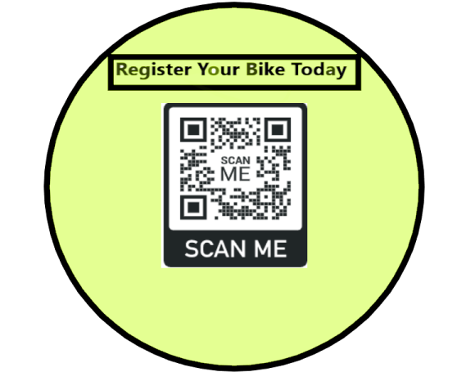
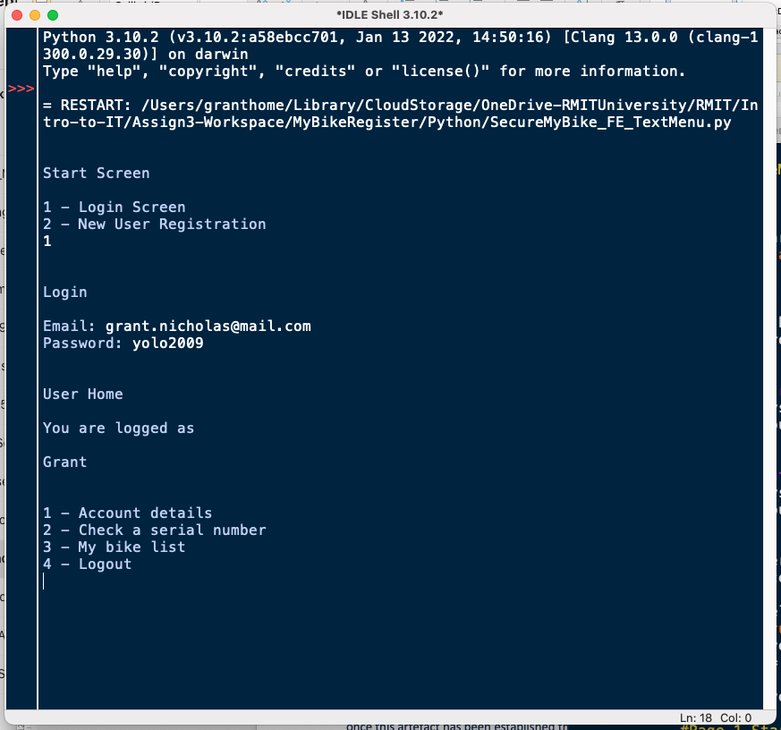
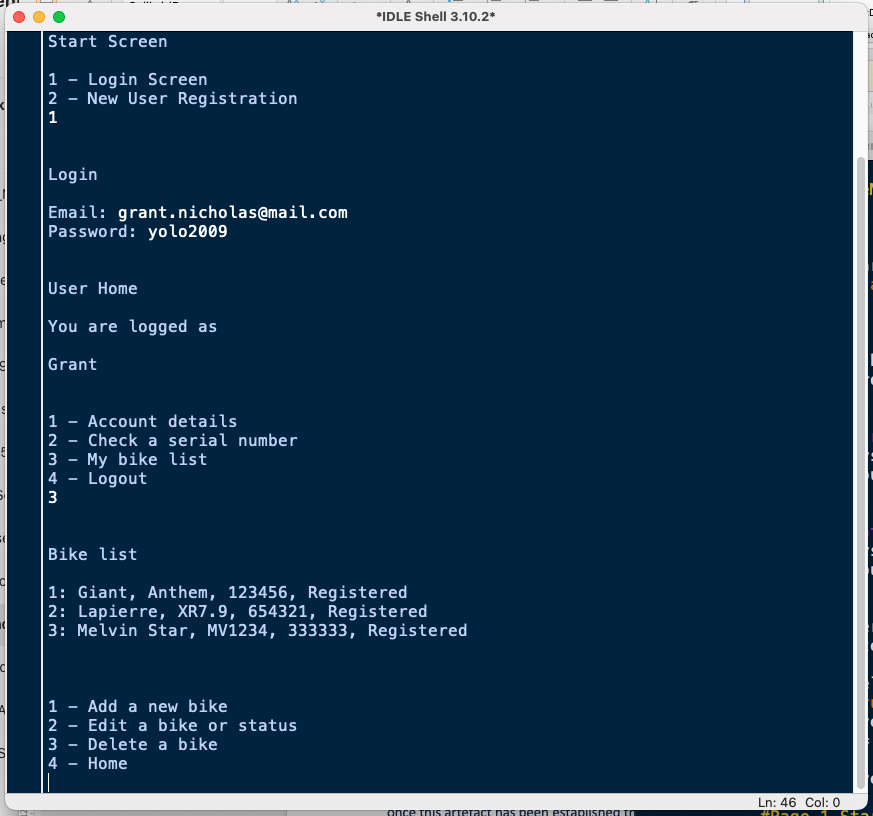
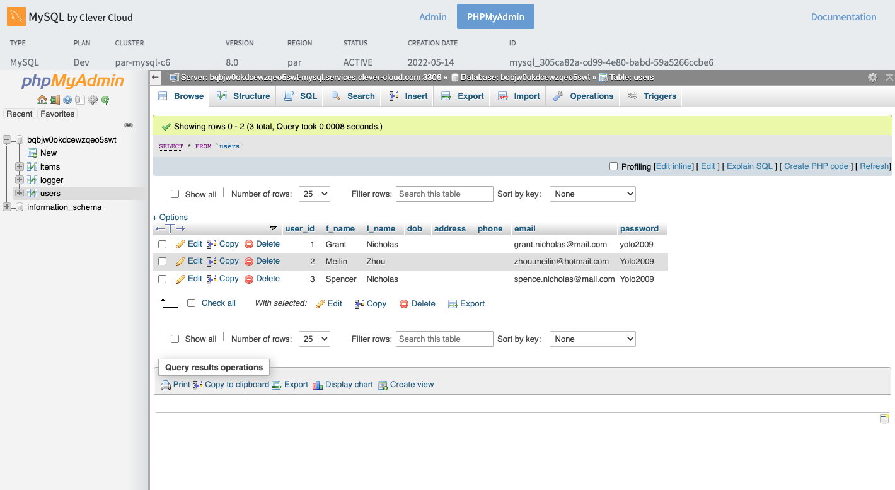
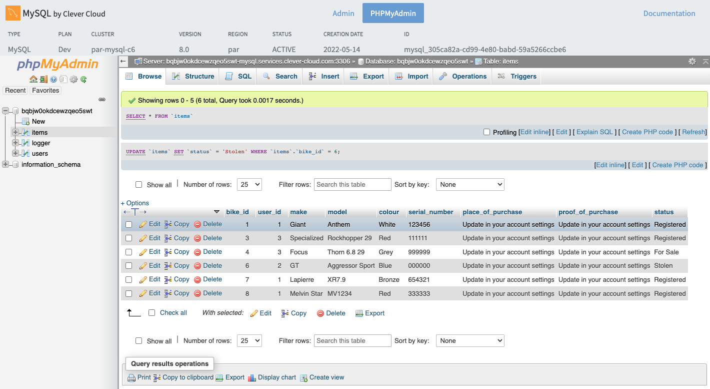

Project Description

Description
My Bike Register would be a Mobile Cloud Computing (MCC) service for a cloud based mobile application for multiplatform delivery that can be accessed either by mobile device or desk top computer.
User generated accounts that record the identification and contact details of the account holder. Name, Current Address, Profile Picture, Email Address and Mobile Number
Account legitimacy would need to be verified with a mobile number and/or email address. In addition, two factor authorisation (2FA) security will be integrated into each account to ensure secure access by only the account holder.
Once a user account has been successfully established and verified, bicycles can be added to the account. Bicycles would contain the following information: Serial number, Type, Make, Model, Year of Manufacture, Colour, Place of Purchase, upload a photo of the bicycle, upload proof of purchase receipt and status of the bicycle (for example – Current Owner, For Sale or Stolen).
The user can store up to one (1) bicycle on the free system. To store more than one (1) bicycle then the user would need to subscribe for five (5) additional storage locations.
Mobile device applications would include the optical character recognition feature that could be used to read and then populate the serial number field of the bicycle form.
If an owner of a registered bicycle were to sell a bicycle, they would flag the bicycle status flag as “For Sale.” A potential buyer could go to the mobile app and scan or enter the serial number. The buyer would receive the “For Sale” verification notification. As part of the transaction, the bicycle would be transferred to the purchasing users account with all the associated details including the original proof of purchase etc.
A bicycle that has been stolen can have its status changed to “Stolen.” In this instance there can also be a field made available for the police report reference number with relevant details of where the report was made and to whom. Now when a potential buyer scans or enters the serial number, they will receive a “Stolen” notification. This will simultaneously notify the registered owner of the bicycle's location. The potential buyer will also be presented with a questionnaire regarding the details of the contact with the stolen bicycle and this will be provided to the legitimate owner.
Secondary advantages to the user of the register will be the ability to create a report for insurance companies that list the users registered bicycles and provide proof of purchase details. In the event of a claim these details are requested by the insurance company.
Additional commercial advantages of the register will be the ability to provide targeted advertising to users of insurance companies, bicycle shops or bicycle events happening in the area using geo-fencing features.
This system can be used for e-bikes and e-scooters as well as mobility scooters. With the values of these items in thousands of dollars, it is a logical step to create this register. This process has truly global potential and is not restricted to the Australian market.
Future additions that may be considered is to have a second-hand bicycle sales platform. Resembling carsales.com or bikesales.com.
Overview
Topic
We are trying to develop a simple solution to a simple problem that up until now has not been adequately addressed. How do you report a stolen bike? Is it the same as when you report a stolen car? For some you’ve probably never thought of this question but for others this is an ever looming issue. Currently there are no effective means of tracking and reporting stolen bikes, which makes it incredibly easy for these stolen bikes to be sold off to unsuspecting buyers and effectively making tracking the bike near impossible.
Now imagine for a moment, before all that happened, you had registered your bike within a database, where the unique barcode and owner of the bike was registered together. When the bike ends up stolen, you are then able to report that the bike is stolen, so bike resellers or even the general public and police will be able to check any bikes against that database and determine if it has been stolen, and who the original owner is.
Motivation
Our goal behind this project was to develop a solution every bike owner or potential bike owner has faced “How do I know this bike isn’t stolen and how do I guarantee that my bike is reported as stolen correctly”. Technology allows us to develop this solution which the industry had been begging for but did not have a solution as of yet.
With the use of Cloud databases used to track the unique barcode of every bike owner, shop owners, police or even the general public will be able to identify and report stolen bikes via our Web Application. The project demonstrates our use of cloud databases interacting with Web Applications, and using those developing technologies to create an innovative solution to a long standing problem.
Landscape
Currently, the main competitor to our solution would be BikeVault, however, the main difference between BikeVault and what we are proposing is the use of their tracking tags, introducing an extra cost and an extra liability, if the tags are removed then BikeVault isn’t able to trace that stolen bike. Using the unique barcode of a bike we add that extra layer of assurance, just like you wouldn’t buy a car without a valid VIN (Vehicle Identification Number), soon you wouldn’t buy a bike if the Barcode as been removed or damaged.
Detailed Description
Aims
The aim of “Secure My Bike” is to establish a centralised national database for a bicycle registration and ownership, making this the source of truth for bike owners and purchasers, retailers, and law enforcement. “My Bike Register” would also allow one user to transfer item registration to another as proof of a legitimate sale transaction. By creating a public registration system that can be easily accessed and utilised with mobile devices, this helps rectify this problem by making the sale of the stolen bicycle more difficult and being able to prove legitimate ownership.
Secondary advantages to the user of the register will be the ability to create a report for insurance companies that list the users registered bicycles and provide proof of purchase details. In the event of a claim these details are requested by the insurance company. This would provide a cost saving to the user and offset the cost of a premium subscription if needed.
The most important part of this project is that it is easily accessible by the users and that the information is stored in an authenticated, centralised, and secure manner. This will be achieved as “My Bike Register” will be a MCC (Mobile Cloud Computing) hosted service which can be accessed by a Mobile Device or desktop computer. Storing personal information that users have entrusted you with is of utmost importance and forms a part of engaging potential user market to your product.
Which parts should have priority over the others – Priority should be given to the construction of the SQL server to form part of the database component. The SQL query connection should be established between the database and the frond end Python solution. As Team Level up has a strong knowledge of servers and experience, we will be wise to focus on this component with our limited time on this project.
Plans and Progress
Application functional workflow

Application functional outline and workflow
The outcome of the application is to make the user experience as easy as possible without creating obstacles to discourage the continuation of the collection of information. This needs to be achieved in a way that still ensures the security of the user's information and maintain the overall database integrity.
The start screen
will guide new users to a registration screen to collect basic information including name and email address and desired password. An email will be sent back to that address to validate its authenticity. Once verified the user will reach the home screen. Alternatively, a registered user will be required to login with their username and password details. Device biometric security features of the individual devices such as facial recognition or fingerprint recognition can populate the login details to expedite the process.
User Home Screen
This is the main navigation page of the application and allows the user to navigate to their account's details/settings screen, they can also navigate item check status screen and items list screen. The user will have the following options
- Logout
- Account Details/settings
- Check item status
- Receive new item
- User Item list
Logout
will secure the application manually and take the user back to the login screen. The application will automatically logout once the program has not been accessed for a period of 5 mins. This will be a setting within the account details/setup screen. The option will be 1 minute, 3 minutes 5 minutes, 15 minutes, 60 minutes and do not automatically log me out.
Account details
will have, in addition to the automatic logout options, additional personal details including the following fields not completed at initial registration. A reminder will pop up encouraging the completion of these fields once the first item is entered into the system.
Additional details include
- First Name
- Last Name
- Date of Birth
- Current physical address
- Profile picture
- Contact phone number
Fields already completed
- Email address
- Password
The user can edit their personal account details on this screen from this screen. In keeping with the new account keeping requirements of the apple iOS platform there also needs to be an option to delete all user account details from the system. This feature will be made available at this screen.
Term/Conditions and Legal information
Will contain all the relevant legal information to be provided to the user regarding privacy policy and non-lability statements etc. This will be accessible from the start screen and the account details screen.
Login
once the account has been established then the user will be required to login to their account with their login name and password.
Account Details/Settings
this is the screen where they can edit their personal details, update their profile picture, modify their opt in settings, etc. as part of apples new policies there also needs to be an option to delete the user and remove all information from the system. This option will be made available on this screen. Navigation from this screen is back to the Home Screen.
Items List
This screen contains the list of items with a basic view of the item's description and status that the user currently has stored against their profile. Within the database, this is a second list containing all the items of all the users. Each item is linked to each user via an internally generated user ID key. This process simplifies the transfer of items to different users. (See Exchange user/Sale an item) From this screen a user can navigate to item details/status screen or add a new item screen.
Item Detail/Status
This screen shows the additional information of each item stored against the user's account. Additional information such as a more detailed description of the item, photo of the bike, serial number of the frame, proof of purchase, modifications, make, model, colour, place of purchase and its status. The status displayed will be predefined as either “current”, “for sale” or “stolen”. This page will also allow for the user to delete the item from the list. From this screen the user can navigate back to the Home Screen or to the edit item details screen. This item information can be supported with artefacts such as the purchase receipt, photo of the item, photo of modifications and modification receipts and/or photos of the user with the item. By having all these artefacts and information stored against the item, in a single place it makes supporting arguments of ownership indisputable.
Edit Item Details
This screen allows the user to modify/update/change any of the item specific details. From this screen the user will be able to access a variety of functions that include file access, scanner access, camera access and optical character recognition (OCR) to assist with the collection of information and artefacts of the item and to strengthen proof of ownership. The status of the item can also be changed at the screen.
New Item
Adding a new item to the list of items that is attached to the user's account. Information recorded includes things such as detailed description of the item, photo of the item, serial number of the frame, proof of purchase, modifications, make, model, colour, place of purchase and its status from a selection of “current”, “for sale” or “stolen”. This screen also allows access to a variety of functions that include file access, scanner access, camera access and optical character recognition (OCR) to assist with the collection of information and artefacts of the item and to strengthen proof of ownership. The status of the item can also be changed at the screen.
Exchange user/Sale an item
If a user wishes to sell an item the from the edit item details screen the user changes the item status to “for sale”. When this is done a screen with a for sale QR code is generated. This can be attached to any image from the user's photo library as a layer and the user can then post this picture of the item with the QR code layer to any sale platform or marketplace platform with the QR code layer attached. Any potential purchaser can then scan the QR code that is on the image, and it would link to item details so the potential purchaser will see that it is a legitimately advertised for sale item. When a transaction occurs a unique code and QR code is generated. The buyer will enter in the code or scan the QR code. The seller/user will acknowledge notification on their device to accept the transaction. The item and all the relevant data will then be transferred to the new owners account with a receipt of the transaction being left on both user's accounts as evidence of the legitimate transfer of the item. The transfer of the item on a technical level is changing the items host. All items when entered the system are independent of the host (user) and linked to the host with the host id number. When a transfer of item occurs the host id reference number is changed to the new host id.
Check Item Status
This screen is accessed via the User Home Screen. It provides the user with an area to enter in the item serial number. Alternatively, the OCR camera can be engaged to scan the serial number automatically. Once the unique number is entered into the system and varified by the user it can them scan the database for a matching item number. If the item is identified in the database, it will return the status of the item to the user presenting them with one of four possible options.
-
Option 1. the item is registered as active.
This is an indication the items details are registered on the system, but it is in normal use. -
Option 2. the item is registered and is flagged for sale.
This is an indication that the current registered user has the item set for sale and that it is a legitimate sale, and the user has all the relevant proof of owner ship information that can be transferred during a sales transaction. -
Option 3. The item is registered and is flagged as stolen.
This is an indication that the legitimate owner of this item has flagged it as a stolen item. The user will then be presented with a small list of questions regarding the location of the contact, contact details of the person trying to sell the item, where they found the item for sale, etc. This information will be sent as a notification to the legitimate owner of the item which they can then use by contacting police with their case ID -
Option 4. The item is not registered on the system.
This is an item that has not been registered on the system.
New Owner/Receiver of the goods
Accessed through the for-sale item status screen or directly from the home screen. This allows the user to enter in the transfer code or scan the QR code provided by the seller to facilitate the transfer of the item to the user. The transfer of the item on a technical level is changing the items host. All items when entered the system are independent of the host (user) and linked to the host with the host id number. When a transfer of item occurs the host id reference number is changed to the new host id.
Commercial Opportunity
An opportunity exists to use the platform to advertise to a specific demographic. Enhance this cohort with geo fencing feature and you have high level targeted market access. With banner advertisements on selected screens of the application, a potential marketer can access potential customers in their region with highly relevant material. This marketing can be outsourced to Google Ads that take the demographic information and control and advertisement content. Revenue is established by clicks and is paid by Google Ads.
Marketing
Cyclists across Australia can now rest assured that while they may have anti-theft devices that can be breached, Me Bike Register will deliver assurance that the property will not easily on sold to an unsuspecting buyer.
The target for our marketing strategy is to reach out to a variety of locations frequented by cyclists. These will include:
- Point Of Sales (Bike shops, Cash Converters etc.)
- End of Trip Facilities
- Coffee Shops along popular routes
- Cycling Events
- Gyms/Clubs
- Stickers to be placed at pedestrian crossings and along bicycle routes
The physical advertisements would include a QR code which would grab the attention of cyclists to scan this code and direct them to the website or App Store.
An opportunity exists to use the platform to advertise to a specific demographic. Enhance this cohort with geo fencing feature and you have high level targeted market access. With banner advertisements on selected screens of the application, a potential marketer can access potential customers in their region with highly relevant material. Geofencing advertising would be a highly effective tool for this demographic of users as they a more likely to have their GPS setting enabled for navigation purposes. This would also target the Gig Economy riders who would benefit the most from this service. This marketing can be outsourced to Google Ads that takes the demographic information and control and advertisement content. Revenue is established by clicks and is paid by Google Ads.
Online advertising strategy would also include online marketplaces including Gumtree, Facebook Marketplace, Finda and EBay. This would allow a consumer to link to their profile on the database and show its current ownership status and purchase history. Creating profile filters to use on these marketplaces advertising this product is available on the register would increase the visibility for genuine sale and trust that the seller is a responsible owner.
The possibility exists to monetise this by presenting a “Freemium” model for payment. This would allow for the attraction of an initially free product with a small payment fee for any additional bikes or scooters. This makes it possible to avoid traditional overspending on paid marketing channels and convoluted sales processes to focus more on building trust and highlighting the value of your product to free tier users through actual usage.
To successfully implement a freemium acquisition model, you must place limitations on certain aspects of your product. You can do this in several ways:
- Feature limitations: Offering extra features, enhanced functionality of available features, or ad hoc paid upgrades (e.g. rare items in a game)
- Usage quotas: Storage limits, monthly credits, data processing quotas
- Limited support: Tiered access to customer service and support resources
By limiting access or usage in your product, you create friction for free users, which encourages them to upgrade to your premium tier.
Outcome
With this project completion there will be an international database for the storage and tracking of bicycles, e-bikes, e-scooters, and mobility scooters. This will act as a deterrent for the would-be criminal and give law enforcement a tool for tracking and tracing these items. This will decrease the amount of theft and increase the number of cases solved.
Additional benefits include the ease of access and security of documentation for insurance policies and claims and the registered pawn brokers can have security in ensuring a products legitimacy prior to any exchange occurring.
Roles
At the start of Assignment 3 we did not define any particular roles, but instead assigned tasks suited to each team member the best. Grant would be the only one with a title as Lead Developer/ Team Lead, with James and Maritza working as Record Keepers and Web
Scope and Limitations
Given the time and expertise of our group, our main goal was to complete a basic python interface allowing for test users to input specific data, and then to have that data stored on a database, which via the same python Interface, have those users pull back information. At this stage, we are not looking to implement features such as Mobile Cloud Computing (MCC) service for a cloud based mobile application for multiplatform delivery as the time constraints and experience mean that this would take most if not majority of the time allocated to the project and at this stage is not required to delivery a working prototype. Other factors that at this stage of development would not be delivered on would be 2FA and a store interface to allow for the Web App to behave as also a store front for second hand trading of bikes.
Tools and Technologies
Throughout the scope of the Project the team investigated and reviewed various software’s that may be required to complete the project. Given that for most of us, this is our first IT course, our experience with most of these software’s are limited to either no exposure at all or very minimal exposure, either via the classes themselves or limited exposure in their workplace.
Regarding the project itself, there are no hardware requirements beyond access to a computer with an Internet connection at this current scope for the project. As most of the data is being handled via a Database, there isn’t a need for local storage on the user’s devices beyond the size of the app itself, which at this stage of development, the app will be a web app and should not require an installation, and if Mobile Cloud Computing (MCC) is used in the future, that size requirement may not be necessary.
Tools Investigated for the Project
- Server – SQL Database cPanel
- Html editor – Atom
- Xcode – iOS compiler
- Android Studio – Android compiler
- Github – code repository
- Teams – team project management
- Photoshop – artistic editing of interface
- Illustrator – artistic editing of interface
- OCR frameworks
- ACME Animated QR Code Generator REST API v0.6
- Real-Time Email Verification API
- Fencer API
- Google Mobile ads (GMA) SDK
Tools Used for the Project
- Python - 3.10.2 programming language
- MySQL Connector/Python 8.0 (self-contained Python driver for communicating with MySQL server)
- Tkinter version 8.6 (cross-platform graphical user interface (GUI) toolkit)
- Visual Studio Code Version: 1.67.1 (code editor redefined and optimized for building and debugging modern web and cloud applications)
- MySQL Server Version 8 hosted by Clever Cloud - https://www.clever-cloud.com
- Program Paradigm – Object Orientated Programming (OOP) Paradigm
Testing

Timeframe
Week 1
There are 3 active members of our team with a variety of skill sets and experience from their day-to-day occupations. We established who would be more capable for each task and assigned them accordingly. Grant has spearheaded the Project form inception, planning and execution. The team selected this project due to Grant’s extensive research and investigation into the execution. The team have been fortunate to have James who has specific experience in Servers and Cloud Based Computing set ups and can apply his expertise in the viability and execution already suggested by Grant.
The initial phase has included extensive discussion on the wire framing software to be used to execute the database. The aim for this project is to utilise freely available programs to build the artefact. The options that were considered included:
- Invision App
- Mockplus
- Adobe XD
- Figma
The discussion surrounded the Teams ability to attain the software and prior experience with the program for support. Eventually we settled on the system as this was the most familiar of the listings that we found.
The next discussion was on how we can build, host and maintain our database in an MCC solution. James has suggested using the SQL server to build as this is something he has extensive experience within his line of work. We were able to establish that using James’ solution would enable us to have a basic database which can be hosted for free if kept to a certain limit. We explored the need for Python to be used in conjunction and how to program the solution to meet our needs.
Week 2
Development of a Python solution began and would run on a cloud-based server using flask to establish an MCC solution. This was experimented with different GUI interfaces, of which are included below:
- QtPy5
- Tkinter
- wxPython
- Kivy
Through trial and error, the program most suited to the project would be Tkinter. This software was free to use and was found this more adaptable for the team’s skill set.
Program paradigm - OOP (Object Orientated Programming) was chosen as the programming paradigm for this project’s proof of concept
Established a Backend and Frontend modules – We were able to establish back end and frontend modules. These were configured using the software previously mentioned in the section “Tools used or the project”
Week 3
- Started the storage of the data as a CSV file. – The week began by constructing the CSV file using a sample size of a proportionate amount to reach.
- Migrated to a cloud-based MySQL server (clever cloud) and established connection with the python backend
- Left the GUI interface due to time constraints and opted for shell-based text menu frontend control (still with OOP paradigm) to establish a functioning prototype for proof of concept.
- The modules can be found on the github: https://github.com/S3954897/IIT_assign3/tree/main/Python
Week 4
We have a function user login and new user

The ability to register a list of bikes to a user
Check the serial number status of any serial number on the server
The Python Interface collects user and the bike dataset from the MySQL server using a primary key-foreign key relationship
 once this artefact has been fully established then the next steps would be to host on the WEB with a MCC(mobile cloud computing) connection. The MCC app would have the additional API requirements for the OCR and QR code generators and readers.
Risks
The main risks with this project was that none of us had extensive, if any experience with most of the proposed Software’s used to complete the project. As such a major issue came in the testing phase of various Software which absorbed a lot of the development time. We all understood that this would be an issue, testing various database hosting solutions, web hosting solutions and Code editors, and that is just to complete a working prototype, those risks will continue when looking to implement a Mobile Cloud Computing MCC solution and the required API’s to work with that.
Once we found a solution that we thought would accomplish our goals, there was also the risk that it does not integrate or even communicate with another of our proposed solutions. During the development stage, certain ideas and proposed solutions had to be changed and readdressed.
Group Processes and Communication
At the beginning of the Project, we had a poll to determine when it would be best for us to meet via a Teams Meeting at least twice a week. These times were locked in to be every Wednesday at 7:30 PM and Every Sunday at 7:30 PM. Otherwise, all other communication was to be via the relevant teams’ channel for the Assignment, along with being the location where all our files would be uploaded prior, and then being uploaded into the group Github repository.